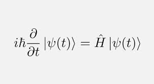

Es una rama muy importante de la física que se encarga de estudiar el mundo atómico y subatómico.
Fue estudiada por grandes físicos como Max Planck y Erwin Schrödinger, entre otros.
Albert Einstein no estaba de acuerdo con esta teoría y publicó un artículo refutándola.
Gracias a este artículo, conocido como la paradoja EPR (por sus autores),
nació un concepto propio del mundo cuántico: el entrelazamiento.
Se conoce como la ecuación de Schrödinger.
